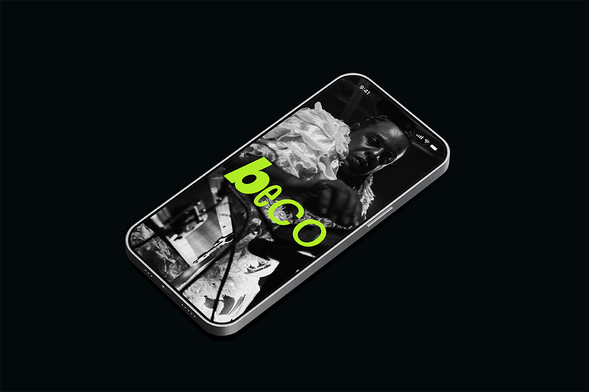
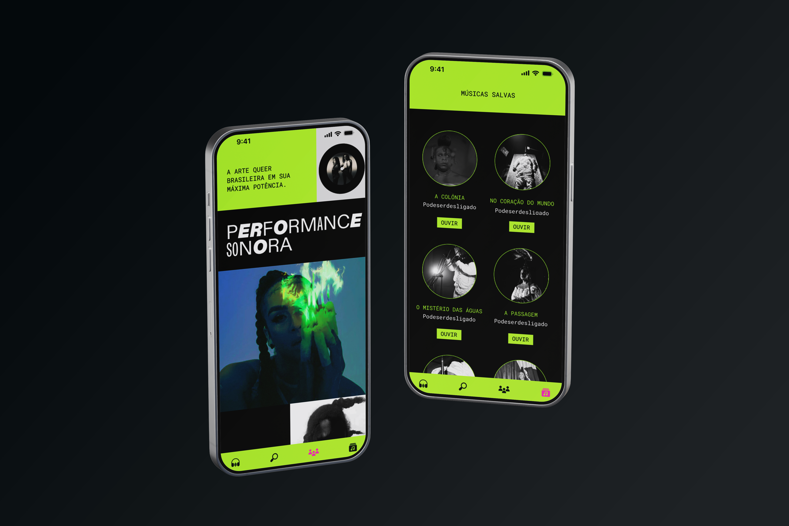
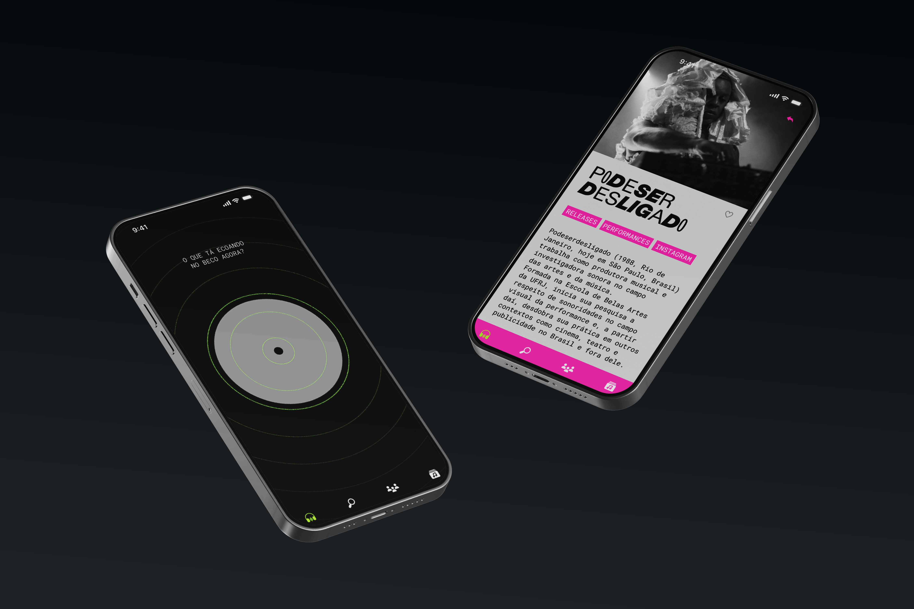

Design by Cecília Cartaxo, Glauber Montimor and Rian Souza
2025
About
Beco: a community ecosystem dedicated to connecting and strengthening LGBT+ cultural production. Moving beyond the limited logic of commercial algorithms, the app operates as a living exchange network where musicians, visual artists, and dissident creators find their peers and expand their audiences.
How can we design interfaces for dissidence? The app was permeated by this central question, which guided every stage of the prototype's construction. We sought to understand how design can serve as a political and social tool, escaping heteronormative usability standards to create an experience that resonates with our community's lived reality.
The Beco interface was shaped to break away from the standardization of conventional platforms, prioritizing an affective and visually pulsating navigability. Through a design system that celebrates queer aesthetics, the prototype materializes functionalities that go beyond passive consumption, creating spaces for community curation and direct support for artists. The result is a digital space that doesn't just host music, but sustains Brazilian dissident identity and art.
What I did
interaction design and creative coding for animations (p5.js)


